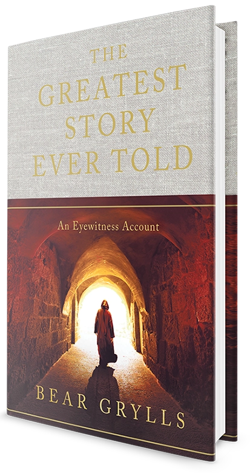
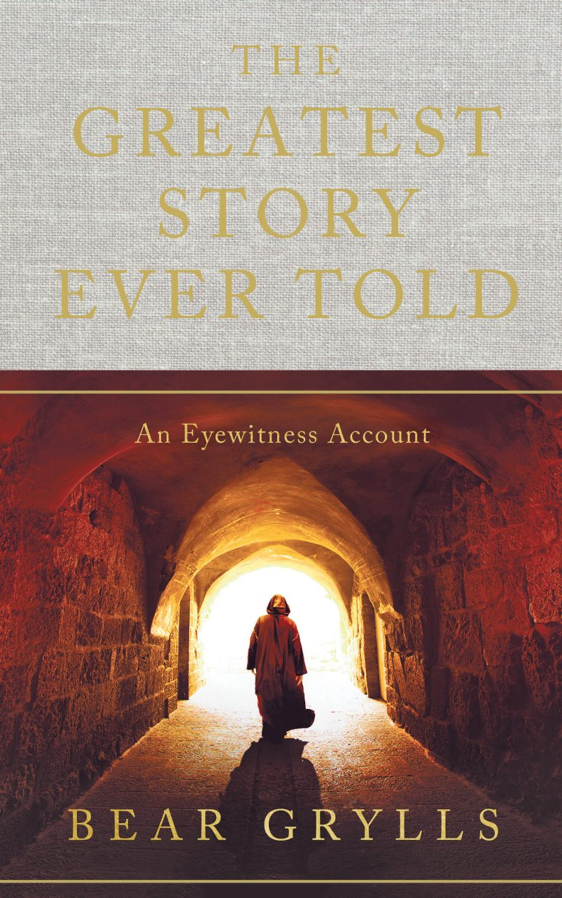
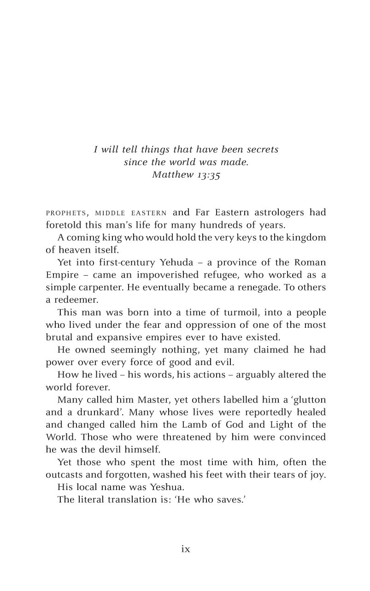
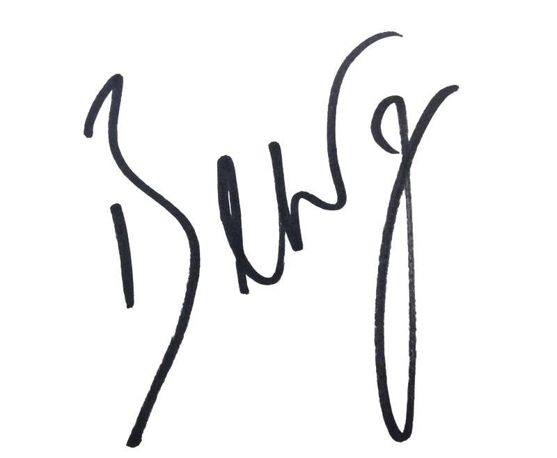

The book
A humble builder. A brutal empire. A mystery that rests on three days.
Beautifully told through the eyewitness accounts of those who knew him best. This real-life story will never leave you.
This is the incredible true story of a Galilean stonemason who changed the course of the world forever. He lived and died over 2,000 years ago, fulfilling expectations that existed long before his birth.
His birth had been mystically foretold by astrologers for hundreds of years, yet the rulers of his day dreaded his coming.
This humble builder and teacher became a magnet for the poor and downtrodden, a symbol of love and mercy, who transformed the lives and restored the health and purpose in all who encountered him.
The local elite and governing rulers eventually tortured him and put him to death in the most violent and public of ways. Yet that was only the beginning.
In the years since, billions of people have dedicated their lives to this man and have testified to his divinity and truth. To others, he is little more than another rebel who was killed by one of the most brutal empires in human history.
How we each respond to this story dictates the course of our lives. And it all rests on the great mystery that occurred at the end of his life: a supernatural event that he had predicted with utter clarity.
Did this humble man tell the truth? Could one man really be the focal point of the universe? Read on to find out, and get ready to make up your own mind.
“There is more evidence that this story is true, than there is that Julius Caesar ever even lived.”Dr Billy Graham · from the jacket
“You believe because you’ve seen with your own eyes. Even better blessings are in store for those who believe without seeing.”From the jacket


Look inside
Begin on the road out of Yerushalem.
The book opens in AD 33, three days after the execution, as two companions walk west at sunset and a stranger falls into step beside them.
Watch
Bear, at Spring Harvest.
Bear introduces The Greatest Story Ever Told at Spring Harvest, in his own words and in his own voice.
Book club read-along
Read it together. Six evenings, one story.
A guide for reading groups, churches and families. Each session follows one stretch of the story, with Gospel passages to read alongside and questions to talk through. Go at your group's own pace.
Sixty to ninety minutes works well. Read the session before you meet, then open with the reflection and let the questions do the rest.
The Gospel passages are there to compare. Notice where the book's eyewitness voices fill in what the Gospels leave out.
Notes and ticks are saved in this browser only. Nothing is sent anywhere.
Reading companion
Ask about the world behind the story.
Who were the Pharisees? Why did Rome crucify people? What was Capernaum like? The companion answers questions about the people, places and history of first-century Judea and Galilee, so you can read with the background in your head.
The companion is powered by Claude. It explains history and the Gospel accounts. It does not speak for Bear or quote the book beyond the passages on this page.
Walk the land
From Bethlehem to the road out of Yerushalem.
Every place in the story is real. Tap a place on the map, or move along the timeline, to see what happened there and where to read about it.
Timeline · dates are scholars' best estimates
Who was there
The eyewitnesses.
The story is told through the people who knew him best. Here is who they were in the Gospel accounts, by the names they would have answered to. Tap a card to turn it over.
Wholesale and bulk
For churches, schools and every group of readers.
Give a copy to every family, every pew, every student. Bulk prices step down as your order grows, shipped from the Hodder & Stoughton warehouse.
Alpha courses, Easter and Christmas giving, welcome packs for new members.
RE departments, chaplaincy and leavers' gifts.
Conference packs, speaker tables and festival stands.
Order through your usual Hodder & Stoughton trade account.
| Copies | Per copy |
|---|
Bulk discounts available in the UK.
Thank you. This preview does not send orders yet; when the site goes live this form will reach the bulk orders team.
A personal note
May the light and love of the Almighty fill your life, with truth, peace and strength. Nothing can ever steal Christ’s presence from you.
